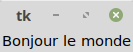
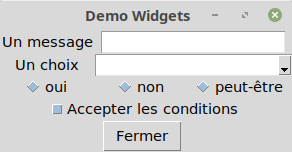

Les applications graphiques avec Tkinter¶
tkinter est un module intégré à Python pour développer des applications
graphiques. Ce module se base sur la bibliothèque graphique Tcl/Tk.
Dans ce chapitre, nous allons voir les bases du développement d’application graphique et le principe de la gestion des événements.
Un premier programme¶
Le programme ci-dessous montre le principe de base de tkinter :
1 2 3 4 5 6 7 8 | import tkinter as tk
app = tk.Tk()
message = tk.Label(app, text="Bonjour le monde")
message.pack()
app.mainloop()
|
Une fois lancé, ce programme fait apparaître une fenêtre avec le message « Bonjour le monde ».
Nous allons détailler ce programme ligne à ligne :
ligne 1 : nous importons le module
tkinterligne 3 : nous créons un nouvel objet
Tk. Cet objet représente la fenêtre principale de l’application graphique.ligne 5 : nous créons un composant graphique de type
Label. Ce composant a la charge d’afficher un texte. Notez que l’on passe l’objetappcomme premier paramètre de construction pour indiquer qu’il appartient à la fenêtre principale.ligne 6 : On appelle la méthode
packdu composantLabel. Cette méthode permet de calculer la taille du composant à l’écran (notamment pour pouvoir afficher correctement le texte).ligne 8 : On appelle la méthode
mainloop(). C’est cette méthode qui affiche la fenêtre et lance la boucle d’événements.
Notion de boucle d’événements¶
Une application graphique ne suit pas la même logique qu’une application en
console ou un programme batch lancé en tache de fond. Une application graphique
doit pouvoir être réactive : elle se modifie lorsque l’utilisateur
clique sur un bouton ou un menu. Les applications basées sur tkinter, comme
beaucoup d’autres applications graphiques, se basent sur l’utilisation d’une
boucle des événements (appelée main loop dans Tkinter). La boucle des événements
est une boucle qui bloque la sortie du programme. Elle traite
continuellement les événements que reçoit l’application graphique. Par exemple,
si l’utilisateur appuie sur une touche du clavier ou bouge la souris, la boucle
des événements en est alertée et crée des objets pour représenter ces événements.
Tant que la boucle des événements s’exécute, l’application ne peut pas s’arrêter.
Elle attend un événement d’arrêt qui est, par exemple, émis lorsque l’utilisateur
clique sur l’icône pour fermer la fenêtre principale.
Note
Nous verrons que nous pouvons déclencher cet événement par programmation
en appelant la méthode Tk.quit().
Si nous reprenons l’exemple de la section précédente, l’appel à
mainloop() à la ligne 6 bloque le programme en lançant la boucle des événéments.
Pour que le programme continue, il est nécessaire de quitter la fenêtre principale
de l’application.
Une application orientée objet¶
La programmation orientée objet est un paradigme très utile pour développer des applications graphiques. Elle permet d’imager qu’une interface graphique est constituée de composants graphiques (bouton, libellé, zone de saisie…) que l’on appelle généralement des widgets. Toutes ces widgets sont représentées dans le code par des objets.
Une fenêtre est vue comme un objet qui contient d’autres objets graphiques. Dans
Tkinter, nous pouvons utiliser des objets de type Frame pour
représenter le contenu d’une fenêtre.
Nous pouvons recoder notre application en considérant qu’elle est constituée par
une fenêtre créée à partir d’une classe héritant de Frame.
import tkinter as tk
class BonjourMondeFrame(tk.Frame):
def __init__(self, root):
super().__init__(root)
self._create_gui()
def _create_gui(self):
message = tk.Label(self, text="Bonjour le monde")
message.pack()
app = tk.Tk()
BonjourMondeFrame(app)
app.mainloop()
Tous les composants graphiques attendent au moins un paramètre (ici appelé
root) qui correspond au composant graphique parent. Nous appelons une méthode
_create_gui dans le constructeur de la classe pour créer le contenu de la
fenêtre.
En concevant une application sous la forme d’un objet, nous pourrons stocker des données comme attributs et fournir des comportements avancés sous la forme de méthodes.
Un exemple de gestion des événements¶
Le clic sur un bouton est un événement assez simple. Cela permet de déclencher un traitement suite à une interaction de l’utilisateur.
Tkinter fournit une classe Button. À la construction, on peut
passer le texte à afficher sur le bouton ainsi qu’une commande, c’est-à-dire
l’action à réaliser lorsque l’utilisateur clique sur le bouton. La commande est
donc une fonction ou une méthode qui sera appelée.
1 2 3 4 5 6 7 8 9 10 11 12 13 14 15 16 | import tkinter as tk
app = tk.Tk()
class SimpleFrame(tk.Frame):
def __init__(self, root):
super().__init__(root)
self._create_gui()
def _create_gui(self):
button = tk.Button(self, text="Fermer", command=app.quit)
button.pack()
SimpleFrame(app)
app.mainloop()
|
L’exemple ci-dessus créé un bouton qui utilise comme commande la fonction app.quit.
L’appel à cette fonction produit un événement de sortie de la boucle des événements,
ce qui ferme la fenêtre, produit le retour la méthode app.mainloop et arrête le
programme.
Les widgets et le positionnement¶
Le code ci-dessous présente les widgets principales :
1 2 3 4 5 6 7 8 9 10 11 12 13 14 15 16 17 18 19 20 21 22 23 24 25 26 27 28 29 30 31 32 33 34 35 36 37 38 39 40 41 42 43 | import tkinter as tk
import tkinter.ttk as ttk
CHOIX = ["oui", "non", "peut-être"]
VALEURS = ['Lundi', 'Mardi', 'Mercredi',
'Jeudi', 'Vendredi', 'Samedi', 'Dimanche']
class DemoWidget(tk.Frame):
def __init__(self, root):
super().__init__(root)
self._create_gui()
self.pack()
def _create_gui(self):
label = tk.Label(self, text="Un message")
label.grid(column=0, row=0)
text = tk.Entry(self)
text.grid(column=1, row=0, columnspan=2)
label = tk.Label(self, text="Un choix")
label.grid(column=0, row=1)
combo = ttk.Combobox(self, text="choix", values=VALEURS)
combo.grid(column=1, row=1, columnspan=2)
for i, rb_label in enumerate(CHOIX):
rb = ttk.Radiobutton(self, text=rb_label, value=i)
rb.grid(column=i, row=2)
checkButton = ttk.Checkbutton(self, text="Accepter les conditions")
checkButton.grid(column=0, row=3, columnspan=3)
button = tk.Button(self, text="Fermer", command=app.quit)
button.grid(column=1, row=4)
app = tk.Tk()
app.title("Demo Widgets")
DemoWidget(app)
app.mainloop()
|
L’application se présente comme ceci :
À la ligne 20, on crée un objet de type tkinter.Entry qui est un champ
de saisi. À la ligne, 26 on créé un objet de type tkinter.ttk.ComboBox
pour représenter une liste déroulante. L’attribut values passé à la construction
donne la liste des valeurs de la liste sous la forme d’une séquence. À la ligne
30, dans une boucle, on ajoute des boutons radio de type tkinter.ttk.RadioButton.
Pour les créer, on passe à la construction les paramètres text pour donner
le libellé du bouton et value pour indiquer la valeur que l’on veut associer
au bouton (la valeur qui sera lui par le programme). À la ligne 33, on crée
un objet de type tkinter.ttk.CheckButton pour représenter une case
à cocher.
Positionnement des widgets¶
Tkinter doit décider comment organiser visuellement les widgets pour les afficher. La plupart du temps, nous utilisons un layout. Il s’agit d’un algorithme qui calcule la position optimale des widgets dans la fenêtre en fonction de paramètres.
Pour notre exemple ci-dessus, nous utilisons un layout en forme de grille. On
suppose que la fenêtre est découpée suivant une grille et les composants viennent
se placer dans des cases à l’intersection d’une ligne et d’une colonne.
Pour cela, nous appelons la méthode grid de chaque widget pour spécifier
la ligne et la colonne de positionnement grâce aux paramètres row
et column. Nous pouvons optionnellement utiliser également les paramètres
rowspan et columnspan pour indiquer si le composant doit s’étendre
sur plusieurs lignes ou sur plusieurs colonnes.
À la ligne 14, on appelle la méthode pack de la fenêtre. C’est cet appel
qui déclenche le calcul de la position des widgets par le layout mais également
la taille de la fenêtre pour permettre d’afficher correctement ces widgets
Collecter les données des widgets¶
Lorsqu’on affiche une fenêtre de dialogue à un utilisateur, c’est avant tout pour collecter des données en vu d’un traitement. Maintenir une cohérence entre les données affichées ou saisies et les structures de données internes au programme est opération importante appelée le binding.
Pour nous aider à réaliser ce binding, Tkinter propose des classes pour
représenter les valeurs affichées et saisies : tkinter.StringVar
(pour une donnée sous la forme de chaîne de caractères), tkinter.IntVar
(pour une donnée sous la forme d’un entier), tkinter.FloatVar (pour une
donnée sous la forme d’un nombre réel), tkinter.BooleanVar (pour une
donnée sous la forme d’une valeur booléenne). Des objets de ces classes peuvent
être associés à des widgets à leur création. Avec les méthodes get et
set, il est possible de consulter ou de modifier ces variables.
Nous pouvons revoir l’implémentation de notre application précédente pour associer des variables aux widgets.
1 2 3 4 5 6 7 8 9 10 11 12 13 14 15 16 17 18 19 20 21 22 23 24 25 26 27 28 29 30 31 32 33 34 35 36 37 38 39 40 41 42 43 44 45 46 47 48 49 50 51 52 53 54 55 56 57 58 59 60 61 | import tkinter as tk
import tkinter.ttk as ttk
CHOIX = ["oui", "non", "peut-être"]
JOURS_SEMAINE = ['Lundi', 'Mardi', 'Mercredi',
'Jeudi', 'Vendredi', 'Samedi', 'Dimanche']
class DemoWidget(tk.Frame):
def __init__(self, root):
super().__init__(root)
self.champs = {
'message': tk.StringVar(),
'jour': tk.StringVar(),
'choix': tk.IntVar(),
'conditions': tk.BooleanVar(),
}
self._create_gui()
self.pack()
def _create_gui(self):
label = tk.Label(self, text="Un message")
label.grid(column=0, row=0)
text = tk.Entry(self, textvariable=self.champs['message'])
text.grid(column=1, row=0, columnspan=2)
label = tk.Label(self, text="Un choix")
label.grid(column=0, row=1)
combo = ttk.Combobox(self, values=JOURS_SEMAINE,
textvariable=self.champs['jour'])
combo.grid(column=1, row=1, columnspan=2)
for i, rb_label in enumerate(CHOIX):
rb = ttk.Radiobutton(self, text=rb_label, value=i,
variable=self.champs['choix'])
rb.grid(column=i, row=2)
checkButton = ttk.Checkbutton(self, text="Accepter les conditions",
variable=self.champs['conditions'])
checkButton.grid(column=0, row=3, columnspan=3)
button = tk.Button(self, text="Valider", command=self.valider)
button.grid(column=0, row=4)
button = tk.Button(self, text="Fermer", command=app.quit)
button.grid(column=2, row=4)
def valider(self):
"""affiche les valeurs saisies sur la console
mais on pourrait faire quelque chose de plus intéressant"""
for v, k in self.champs.items():
print(f"{v} : {k.get()}")
app = tk.Tk()
app.title("Demo Widgets")
DemoWidget(app)
app.mainloop()
|
Aux lignes 13 à 18, nous créons un dictionnaire des champs de notre fenêtre.
Ces champs sont représentés par des objets de types tkinter.StringVar,
tkinter.IntVar ou tkinter.BooleanVar. Notez que les boutons
radio sont tous associés à la même variable. Ainsi quand un bouton est choisi,
sa valeur remplace la valeur précédente.
Nous avons ajouté un bouton (ligne 45) qui appelle la méthode valider de la
classe DemoWidget. Cette méthode se contente d’afficher sur la console la
valeur des différentes variables du dictionnaire grâce à leur méthode get.
Ces valeurs correspondent à celles saisies par l’utilisateur
Note
Si vous voulez initialiser les champs, il suffit de positionner une valeur
dans la variable associée grâce à la méthode set.
def __init__(self, root):
super().__init__(root)
self.champs = {
'message': tk.StringVar(),
'jour': tk.StringVar(),
'choix': tk.IntVar(),
'conditions': tk.BooleanVar(),
}
self.champs['message'].set("Message par défaut")
self.champs['jour'].set("Mercredi")
self.champs['choix'].set(2)
self.champs['conditions'].set(True)
self._create_gui()
self.pack()
Les boites de messages¶
Tkinter fournit des fonctions simples pour afficher des boites de message à l’utilisateur. Ces fonctions prennent comme premier paramètre le titre de la fenêtre de dialogue et comme second paramètre le message à afficher. Les différents types de boite de message sont :
from tkinter import messagebox
messagebox.showinfo("Message info", "Ceci est un message d'information")
from tkinter import messagebox
messagebox.showwarning("Message d'avertissement", "Ceci est un message d'avertissement")
from tkinter import messagebox
messagebox.showerror("Message d'erreur", "Ceci est un message d'erreur")
from tkinter import messagebox
reponse = messagebox.askokcancel("Question", "Voulez-vous continuer ?")
Cette fonction retourne True si l’utilisateur clique sur Ok
et None si l’utilisateur clique sur Annuler.
from tkinter import messagebox
reponse = messagebox.askyesno("Question", "Voulez-vous continuer ?")
Cette fonction retourne True si l’utilisateur clique sur Oui
et False si l’utilisateur clique sur Non.
from tkinter import messagebox
reponse = messagebox.askyesnocancel("Question", "Voulez-vous continuer ?")
Cette fonction retourne True si l’utilisateur clique sur Oui,
False si l’utilisateur clique sur Non et None si
l’utilisateur clique sur Annuler.
Les boites de dialogue avancées¶
Tkinter propose des boites de dialogue aux fonctionnalités avancées. Parmi elles,
il y les boites de dialogue pour la gestion des fichiers qui sont dans le module
tkinker.filedialog.
Ces boites de dialogues permettent à l’utilisateur de choisir un fichier ou un répertoire, la plupart du temps pour des opérations de chargement ou de sauvegarde.
from tkinter import filedialog
choix = filedialog.askopenfilename()
L’appel à la fonction askopenfilename ouvre une boite de dialogue pour
permettre de sélectionner un fichier pour l’ouvrir. Cette fonction retourne
le chemin du fichier choisi ou None si l’utilisateur s’est contenté
de cliquer sur le bouton Annuler.
La boite de dialogue d’ouverture de fichier de Tkinter¶
Il est possible de passer les paramètres suivants à la fonction :
- parent
La fenêtre qui ouvre la boite de dialogue
- title
Le titre à afficher dans la boite de dialogue
- filetypes
La liste des fichiers à afficher selon leur extension. Ce paramètre est une séquence de n-uplets. Chaque n-uplet fournit le texte à afficher dans la liste des filtres et l’extension à filtrer. Par exemple :
[("Fichiers Python", '.py'), ("Fichiers JSON", '.json')]
- initialdir
Le répertoire qui doit être sélectionné à l’ouverture de la boite de dialogue. Par défaut, il s’agit du répertoire de travail.
- initialfile
Le nom du fichier qui doit être choisi par défaut. Ce fichier n’a pas besoin d’exister.
choix = filedialog.askopenfilename(title="Ouvrir un fichier source Python",
filetypes=[("Fichier python", '.py')],
initialdir="/home/david/workspace/python",
initialfile="monfichier.py")
from tkinter import filedialog
choix = filedialog.askdirectory()
L’appel à la fonction askdirectory ouvre une boite de dialogue pour
permettre de sélectionner un répertoire. Cette fonction retourne
le chemin du répertoire choisi ou None si l’utilisateur s’est contenté
de cliquer sur le bouton Annuler. On peut passer des paramètres
identiques à la fonction askopenfilename
from tkinter import filedialog
choix = filedialog.asksaveasfile()
L’appel à la fonction asksaveasfile ouvre une boite de dialogue pour
permettre de sélectionner un fichier pour une sauvegarde. Cette fonction retourne
le chemin du fichier choisi ou None si l’utilisateur s’est contenté
de cliquer sur le bouton Annuler. On peut passer des paramètres
identiques à la fonction askopenfilename
Toutes ces boites de dialogues ne réalisent aucun traitement sur les fichiers,
elles servent juste à fournir une interface avancée à l’utilisateur pour choisir
une fichier ou un répertoire. La différence entre l’appel à askopenfilename
et asksaveasfile est que la dernière fonction n’oblige pas l’utilisateur à
choisir un fichier qui existe déjà.
Note
Pour aller plus loin :